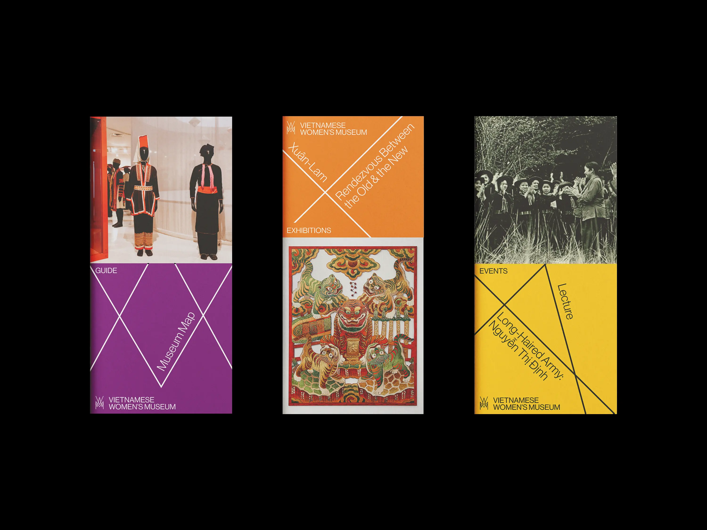
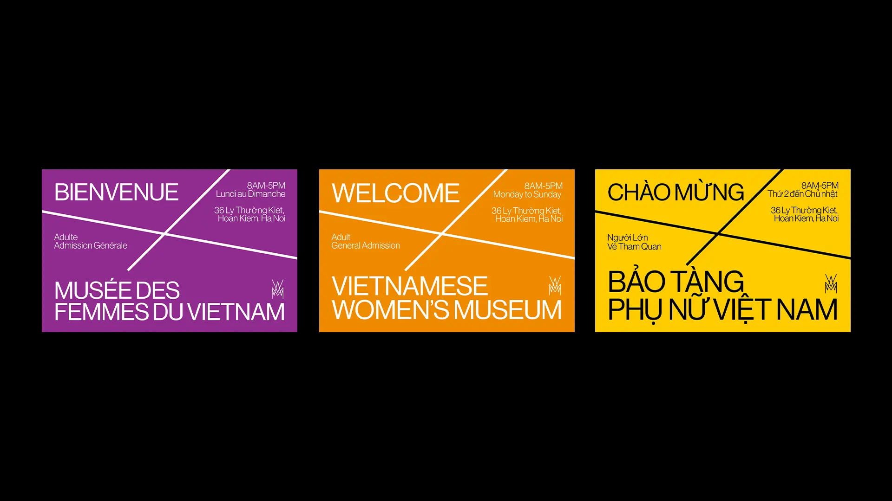
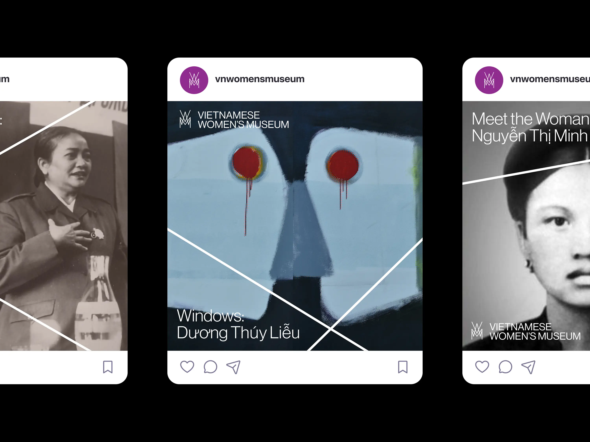

Vietnamese Women's Museum
Identity, Motion
2025
A hypothetical rebrand of the Vietnamese Women's Museum in Hanoi. The logo is inspired by Vietnam's matriarchal history, with its shape being a reference to traditional Vietnamese stilt houses.
Identity, Motion
2025
A hypothetical rebrand of the Vietnamese Women's Museum in Hanoi. The logo is inspired by Vietnam's matriarchal history, with its shape being a reference to traditional Vietnamese stilt houses.